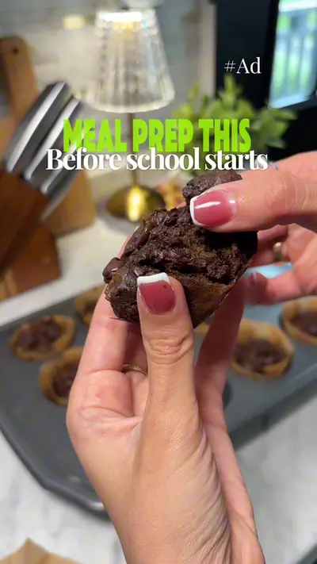

Would you put an entire avocado into chocolate muffins?

Ingredients
- 1 ripe avocado
- ½ cup all purpose flour or oat flour
- 2 eggs
- ⅓ cup peanut butter
- ⅓ cup maple syrup
- ⅓ cup cocoa powder
- 1 tsp vanilla extract
- 1 tsp baking powder
- Handful of chocolate chips
Steps
- If using oat flour, blend the oats into a fine flour.
- Add the avocado and all remaining ingredients except the chocolate chips, then blend until smooth.
- Fold in the chocolate chips.
- Pour into a greased muffin tin.
- Bake at 350°F for 20 minutes.
- Let cool completely before serving. Have you ever baked with avocado before? @Aguacates - Love One Today
Recipe text as written by @soniamazri on TikTok. Open original